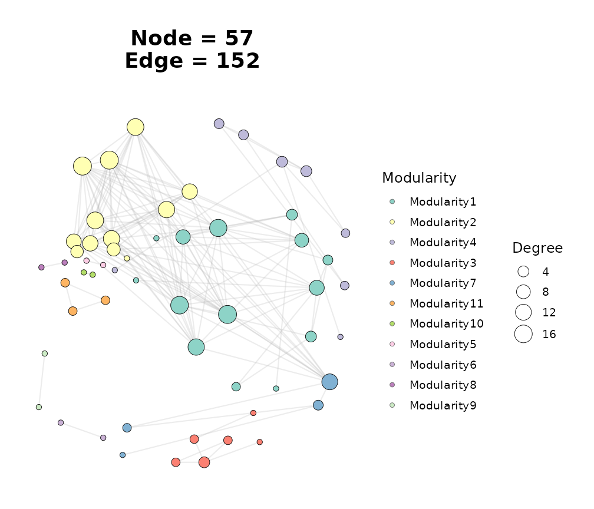
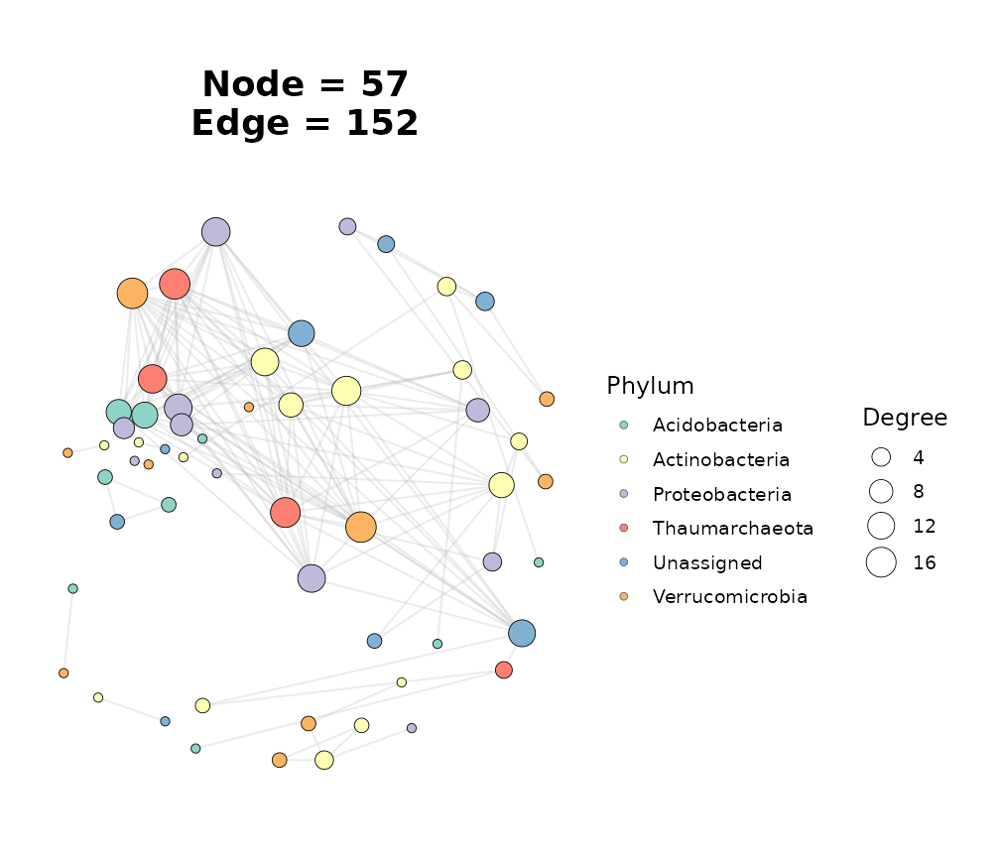
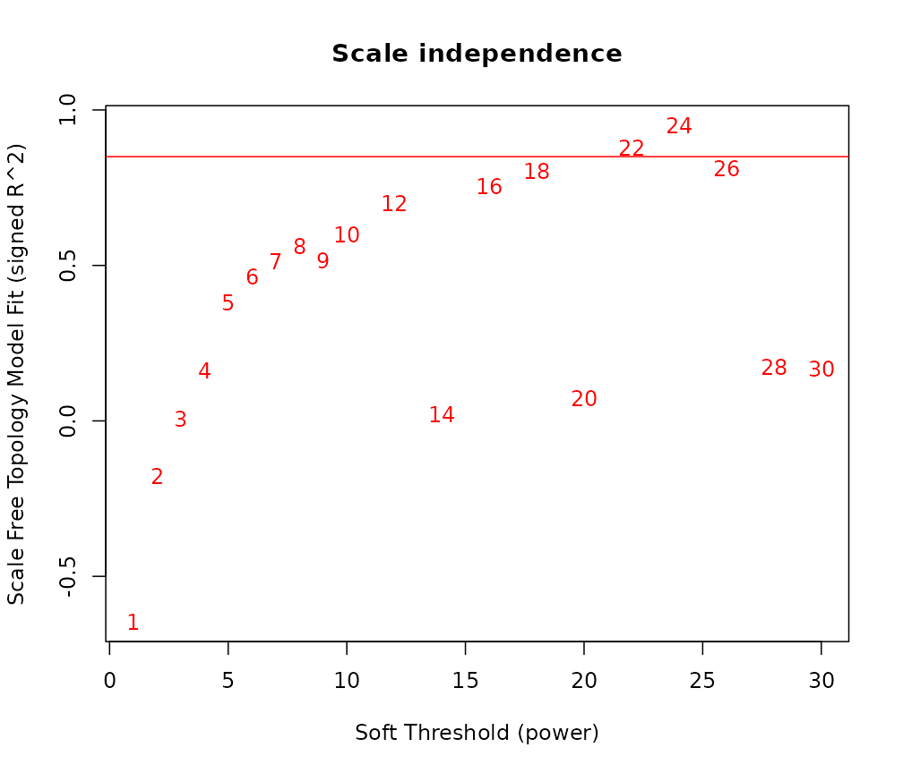
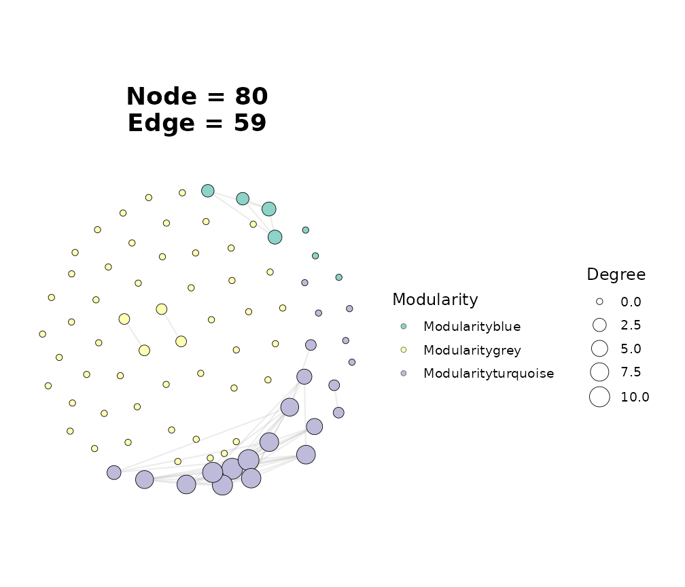
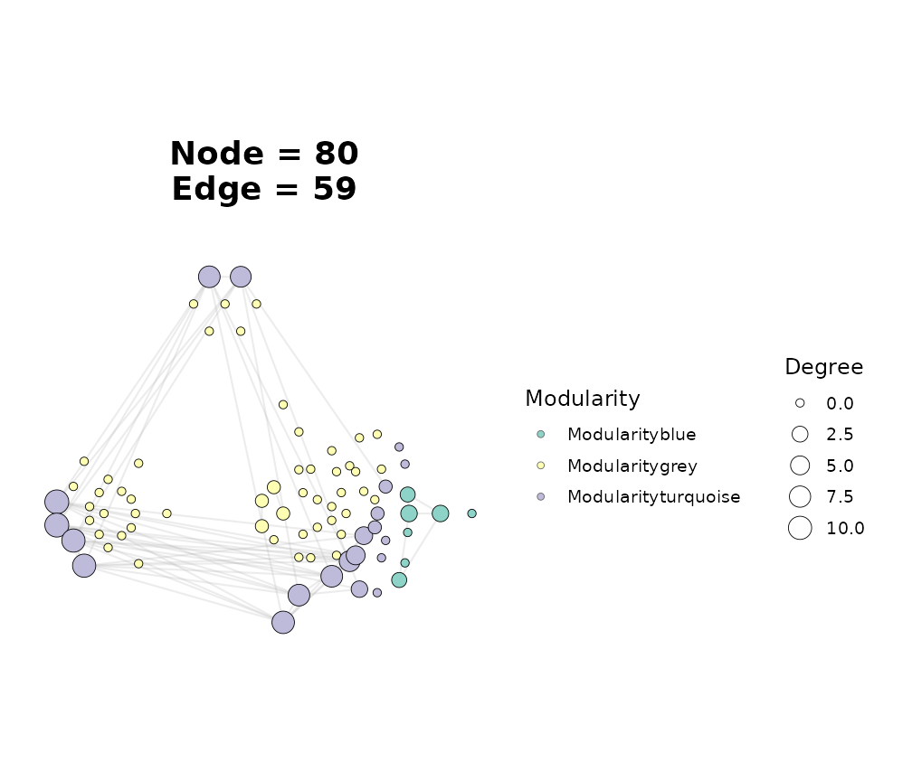
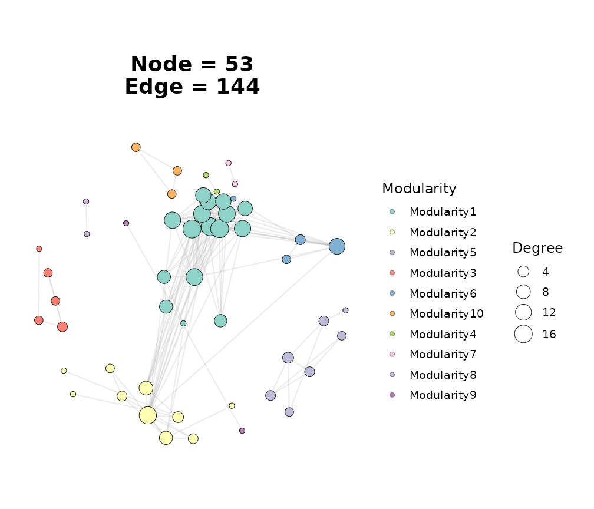
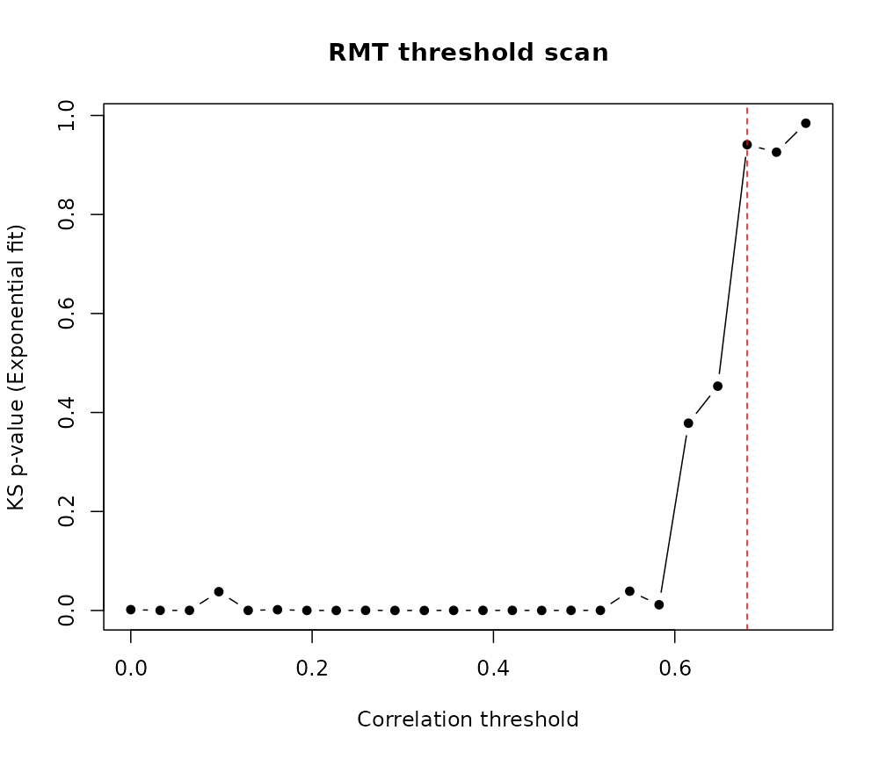

Overview
Weighted Gene Co-expression Network Analysis (WGCNA) is the standard
approach for constructing gene co-expression networks from
high-throughput expression data. ggNetView integrates with
WGCNA at two levels:
-
Quick route – pass
method = "WGCNA"tobuild_graph_from_mat()and let ggNetView handle correlation, thresholding, and module detection in a single call. -
Full pipeline – run the classic WGCNA
soft-thresholding and TOM workflow yourself, then hand the results to
trans_TOM_in_WGCNA()andbuild_graph_from_wgcna()for visualisation.
Both routes produce the same tidygraph object that
ggNetView() can plot directly.
library(ggNetView)
#>
#> ░██ ░██
#> ░██
#> ░████████ ░████████ ░████████ ░███████ ░████████ ░██ ░██ ░██ ░███████ ░██ ░██ ░██
#> ░██ ░██ ░██ ░██ ░██ ░██ ░██ ░██ ░██ ░██ ░██ ░██░██ ░██ ░██ ░██ ░██
#> ░██ ░██ ░██ ░██ ░██ ░██ ░█████████ ░██ ░██ ░██ ░██░█████████ ░██ ░████ ░██
#> ░██ ░███ ░██ ░███ ░██ ░██ ░██ ░██ ░██░██ ░██░██ ░██░██ ░██░██
#> ░█████░██ ░█████░██ ░██ ░██ ░███████ ░████ ░███ ░██ ░███████ ░███ ░███
#> ░██ ░██
#> ░███████ ░███████
#>
#>
#> ggNetView: Reproducible and Deterministic Network Analysis and Visualization
#> Version: 0.2.1
#>
#> Authors: Yue Liu, Chao Wang
#> Maintainer: Yue Liu <yueliu@iae.ac.cn>
#>
#> Manual: https://jiawang1209.github.io/ggNetView-manual/
#> GitHub: https://github.com/Jiawang1209/ggNetView
#> Bug Reports: https://github.com/Jiawang1209/ggNetView/issues
#>
#> Type citation('ggNetView') for how to cite this package.1. Quick route:
build_graph_from_mat(method = "WGCNA")
The simplest way to build a WGCNA-style network is to switch the
method argument. Internally this calls
WGCNA::corAndPvalue() for correlation and p-values, then
applies the same thresholding and module detection as every other
method.
data(otu_rare_relative)
mat <- as.matrix(otu_rare_relative)
mat <- mat[order(rowSums(mat), decreasing = TRUE)[seq_len(80)], ]
graph_wgcna <- build_graph_from_mat(
mat = mat,
method = "WGCNA",
cor.method = "spearman",
proc = "BH",
r.threshold = 0.6,
p.threshold = 0.05,
module.method = "Fast_greedy",
seed = 1
)
#> The max module in network is 11 we use the 11 modules for next analysis
graph_wgcna
#> # A tbl_graph: 57 nodes and 152 edges
#> #
#> # An undirected simple graph with 9 components
#> #
#> # Node Data: 57 × 7 (active)
#> name modularity modularity2 modularity3 Modularity Degree Strength
#> <chr> <fct> <ord> <chr> <ord> <dbl> <dbl>
#> 1 ASV_10 1 1 1 1 17 13.1
#> 2 ASV_2 1 1 1 1 16 12.5
#> 3 ASV_66 1 1 1 1 15 11.6
#> 4 ASV_44 1 1 1 1 13 9.90
#> 5 ASV_77 1 1 1 1 10 7.38
#> 6 ASV_64 1 1 1 1 9 6.53
#> 7 ASV_62 1 1 1 1 8 5.75
#> 8 ASV_33 1 1 1 1 4 3.26
#> 9 ASV_43 1 1 1 1 4 2.77
#> 10 ASV_32 1 1 1 1 3 2.36
#> # ℹ 47 more rows
#> #
#> # Edge Data: 152 × 5
#> from to weight correlation corr_direction
#> <int> <int> <dbl> <dbl> <chr>
#> 1 27 31 0.750 0.750 Positive
#> 2 28 31 0.730 0.730 Positive
#> 3 2 17 0.783 0.783 Positive
#> # ℹ 149 more rowsThe returned object is identical in structure to one produced with
method = "cor" or "Hmisc", so every downstream
function (ggNetView(), get_network_topology(),
ggnetview_zipi()) works unchanged.
ggNetView(
graph_wgcna,
layout = "fr",
seed = 1,
node_size_range = c(2, 7),
node_fill = "Modularity",
module_label = FALSE
)
Quick-route WGCNA network coloured by module.
Attaching taxonomy
Pass a node annotation table to colour by taxonomy instead of module:
data(tax_tab)
annot <- tax_tab[tax_tab$OTUID %in% rownames(mat), ]
graph_wgcna_annot <- build_graph_from_mat(
mat = mat,
method = "WGCNA",
cor.method = "spearman",
proc = "BH",
r.threshold = 0.6,
p.threshold = 0.05,
module.method = "Fast_greedy",
node_annotation = annot,
seed = 1
)
#> The max module in network is 11 we use the 11 modules for next analysis
ggNetView(
graph_wgcna_annot,
layout = "fr",
seed = 1,
node_size_range = c(2, 7),
node_fill = "Phylum",
module_label = FALSE
)
WGCNA network coloured by Phylum.
2. Full WGCNA pipeline
When you need fine-grained control over soft-thresholding power, TOM type, or the dendrogram cut height, run the classic WGCNA steps yourself and feed the results into ggNetView.
Step 2: Pick a soft-thresholding power
# Force WGCNA into single-threaded mode before calling
# `pickSoftThreshold()`. WGCNA spins up an internal foreach/parallel
# cluster by default, which is fragile inside vignette / R CMD check
# environments (and intermittently dies with
# "Error in summary.connection(connection) : invalid connection").
# Single-threaded is slower but deterministic and side-effect-free,
# which is exactly what we want for reproducible documentation. Users
# can re-enable parallelism for production work via
# `WGCNA::allowWGCNAThreads()` or `WGCNA::enableWGCNAThreads()`.
WGCNA::disableWGCNAThreads()
powers <- c(seq(1, 10, by = 1), seq(12, 30, by = 2))
sft <- WGCNA::pickSoftThreshold(
expr_mat,
powerVector = powers,
networkType = "signed",
verbose = 0
)
#> Power SFT.R.sq slope truncated.R.sq mean.k. median.k. max.k.
#> 1 1 0.64600 8.260 0.7460 40.200 40.2000 44.30
#> 2 2 0.17700 1.850 0.2240 22.500 21.8000 28.40
#> 3 3 0.00598 -0.183 -0.0753 13.700 12.7000 20.30
#> 4 4 0.16100 -0.813 -0.0392 8.990 8.0100 15.90
#> 5 5 0.38200 -1.120 0.2140 6.250 5.2600 13.00
#> 6 6 0.46400 -1.250 0.4430 4.570 3.5900 11.10
#> 7 7 0.51400 -1.290 0.5750 3.490 2.5400 9.73
#> 8 8 0.56400 -1.180 0.6800 2.750 1.8200 8.72
#> 9 9 0.51600 -1.110 0.6140 2.230 1.3500 7.91
#> 10 10 0.59900 -1.140 0.6930 1.850 1.0400 7.24
#> 11 12 0.70000 -1.130 0.7580 1.340 0.6550 6.19
#> 12 14 0.02260 -0.940 -0.0480 1.020 0.4450 5.38
#> 13 16 0.75600 -1.060 0.7700 0.808 0.2980 4.73
#> 14 18 0.80400 -1.070 0.7940 0.654 0.2060 4.19
#> 15 20 0.07210 -1.410 -0.0909 0.538 0.1460 3.74
#> 16 22 0.87800 -1.000 0.8720 0.450 0.1070 3.36
#> 17 24 0.95000 -0.961 0.9470 0.381 0.0804 3.03
#> 18 26 0.81200 -0.993 0.8070 0.325 0.0597 2.74
#> 19 28 0.17300 -1.980 -0.0461 0.280 0.0444 2.49
#> 20 30 0.16800 -1.930 -0.0536 0.243 0.0331 2.27
plot(sft$fitIndices[, 1],
-sign(sft$fitIndices[, 3]) * sft$fitIndices[, 2],
xlab = "Soft Threshold (power)",
ylab = "Scale Free Topology Model Fit (signed R^2)",
main = "Scale independence",
type = "n")
text(sft$fitIndices[, 1],
-sign(sft$fitIndices[, 3]) * sft$fitIndices[, 2],
labels = powers, col = "red")
abline(h = 0.85, col = "red")
Scale-free topology fit versus soft-thresholding power.
Choose the lowest power where the model fit (\(R^2\)) exceeds 0.85.
Step 3: Build TOM and detect modules
adjacency <- WGCNA::adjacency(
expr_mat,
power = picked_power,
type = "signed",
corFnc = "cor",
corOptions = list(method = "spearman", use = "pairwise.complete.obs")
)
TOM <- WGCNA::TOMsimilarity(adjacency, TOMType = "signed")
#> ..connectivity..
#> ..matrix multiplication (system BLAS)..
#> ..normalization..
#> ..done.
dissTOM <- 1 - TOM
gene_tree <- hclust(as.dist(dissTOM), method = "average")
dynamic_mods <- dynamicTreeCut::cutreeDynamic(
dendro = gene_tree,
distM = dissTOM,
deepSplit = 2,
minClusterSize = 5
)
#> ..cutHeight not given, setting it to 0.997 ===> 99% of the (truncated) height range in dendro.
#> ..done.
module_colors <- WGCNA::labels2colors(dynamic_mods)
module_df <- data.frame(
ID = colnames(expr_mat),
Module = module_colors,
stringsAsFactors = FALSE
)
head(module_df)
#> ID Module
#> 1 ASV_1 grey
#> 2 ASV_2 turquoise
#> 3 ASV_3 grey
#> 4 ASV_4 grey
#> 5 ASV_8 grey
#> 6 ASV_6 turquoiseStep 4: Convert TOM to edge list
trans_TOM_in_WGCNA() converts the dense TOM matrix into
a long-format edge list (from, to,
weight). Use the threshold argument to keep
only the strongest edges:
# `trans_TOM_in_WGCNA()` uses `colnames(mat)` as node IDs, so `mat` must
# be in the same orientation as the input to `WGCNA::adjacency()`:
# samples in rows, features (genes/OTUs) in columns. `expr_mat` is
# already in that shape (we transposed once at Step 1), so pass it
# straight in -- transposing again would swap node IDs to sample IDs and
# fail the dimension check inside trans_TOM_in_WGCNA().
edge_df <- trans_TOM_in_WGCNA(
TOM = TOM,
mat = expr_mat,
threshold = 0.1
)
head(edge_df)
#> from to weight
#> 1 ASV_2 ASV_6 0.1484648
#> 2 ASV_2 ASV_10 0.1511034
#> 3 ASV_6 ASV_10 0.1168046
#> 4 ASV_2 ASV_17 0.1204909
#> 5 ASV_6 ASV_17 0.4528145
#> 6 ASV_10 ASV_17 0.1158161
dim(edge_df)
#> [1] 59 3Step 5: Build the ggNetView graph object
graph_full <- build_graph_from_wgcna(
wgcna_tom = edge_df,
module = module_df,
node_annotation = annot,
seed = 1
)
graph_full
#> # A tbl_graph: 80 nodes and 59 edges
#> #
#> # An undirected simple graph with 61 components
#> #
#> # Node Data: 80 × 15 (active)
#> name Module modularity modularity2 modularity3 Modularity Degree Strength
#> <chr> <chr> <fct> <fct> <chr> <fct> <dbl> <dbl>
#> 1 ASV_33 blue blue blue blue blue 3 0.734
#> 2 ASV_77 blue blue blue blue blue 3 0.706
#> 3 ASV_32 blue blue blue blue blue 2 0.378
#> 4 ASV_37 blue blue blue blue blue 2 0.311
#> 5 ASV_43 blue blue blue blue blue 0 0
#> 6 ASV_46 blue blue blue blue blue 0 0
#> 7 ASV_66 blue blue blue blue blue 0 0
#> 8 ASV_3 grey grey grey grey grey 1 0.169
#> 9 ASV_11 grey grey grey grey grey 1 0.261
#> 10 ASV_55 grey grey grey grey grey 1 0.169
#> # ℹ 70 more rows
#> # ℹ 7 more variables: Kingdom <chr>, Phylum <chr>, Class <chr>, Order <chr>,
#> # Family <chr>, Genus <chr>, Species <chr>
#> #
#> # Edge Data: 59 × 3
#> from to weight
#> <int> <int> <dbl>
#> 1 60 65 0.148
#> 2 65 68 0.151
#> 3 60 68 0.117
#> # ℹ 56 more rowsStep 6: Visualise
ggNetView(
graph_full,
layout = "fr",
seed = 1,
node_size_range = c(2, 7),
node_fill = "Modularity",
module_label = FALSE
)
Full WGCNA pipeline – Fruchterman-Reingold layout.
Try different layouts to highlight module structure:
# Note the `_layout` suffix: the petal-style layout functions are named
# `create_layout_circular_modules_petal_layout()` (and the *2 variant),
# whereas other layouts like `fr` / `gephi` / `kk` use the bare name. The
# `layout` argument is concatenated to `create_layout_` to look up the
# function, so it must include the suffix here.
ggNetView(
graph_full,
layout = "circular_modules_petal_layout",
seed = 1,
node_size_range = c(2, 6),
node_fill = "Modularity",
module_label = FALSE
)
Circular module layout groups nodes by WGCNA module.
3. RMT-guided threshold selection
When you are unsure what r.threshold to use, Random
Matrix Theory (RMT) can pick one automatically.
ggNetView_RMT() scans a range of thresholds and selects the
one whose nearest-neighbour spacing distribution best fits the Poisson
(non-random) model.
rmt_res <- ggNetView_RMT(
mat = mat,
method = "WGCNA",
cor.method = "spearman",
nr_thresholds = 31,
verbose = FALSE,
seed = 1
)
#> Warning in ggNetView_RMT(mat = mat, method = "WGCNA", cor.method = "spearman",
#> : Matrix is relatively small (<100): RMT statistics may be unstable.
message("RMT chosen threshold: ", round(rmt_res$chosen_threshold, 4))
#> RMT chosen threshold: 0.6798Feed the chosen threshold back into the builder:
graph_rmt <- build_graph_from_mat(
mat = mat,
method = "WGCNA",
cor.method = "spearman",
proc = "BH",
r.threshold = rmt_res$chosen_threshold,
p.threshold = 0.05,
module.method = "Fast_greedy",
seed = 1
)
#> The max module in network is 10 we use the 10 modules for next analysis
ggNetView(
graph_rmt,
layout = "fr",
seed = 1,
node_size_range = c(2, 7),
node_fill = "Modularity",
module_label = FALSE
)
Network built with RMT-selected threshold.
Visualising the RMT scan
The scores element contains per-threshold diagnostics. A
quick plot helps verify the choice:
scores <- rmt_res$scores
plot(scores$threshold, scores$ks_p,
type = "b", pch = 16,
xlab = "Correlation threshold",
ylab = "KS p-value (Exponential fit)",
main = "RMT threshold scan")
abline(v = rmt_res$chosen_threshold, lty = 2, col = "red")
KS p-value (higher = more Poisson-like) across thresholds.
4. Topology and keystone analysis
Once you have a graph object (from either route), the topology and Zi-Pi functions work identically.
Global topology
topo <- get_network_topology(graph_obj = graph_wgcna, bootstrap = 20)
head(topo$topology)
#> # A tibble: 6 × 3
#> Topology Target_network Random_nerwork
#> <chr> <dbl> <dbl>
#> 1 Node 57 57
#> 2 Edge 152 152
#> 3 Degree 5.33 5.33
#> 4 Distance 1.58 2.56
#> 5 Diameter 3.81 5.1
#> 6 Density 0.0952 0.0952Zi-Pi classification
nodes_tbl <- get_graph_nodes(graph_wgcna)
adj_mat <- get_graph_adjacency(graph_wgcna)
zipi <- ggnetview_zipi(
nodes_bulk = nodes_tbl,
z_bulk_mat = adj_mat,
modularity_col = "Modularity",
degree_col = "Degree"
)
zipi$plot
Zi-Pi scatter plot identifying keystone taxa.
Nodes in the upper-right quadrant (high Zi and high Pi) are network hubs – candidates for keystone species or genes that bridge multiple functional modules.
5. Quick-route vs full-pipeline: when to use which
| Feature | Quick route | Full pipeline |
|---|---|---|
| Lines of code | ~10 | ~40 |
| Soft-thresholding power | Not applicable (hard threshold) | User-selected |
| TOM-based edges | No (correlation-based) | Yes |
| Module detection | igraph algorithms | WGCNA dynamicTreeCut
|
| Best for | Exploratory analysis, microbiome data | Gene expression, publication-grade networks |
The quick route treats WGCNA purely as a fast correlation engine and applies the same hard-threshold + igraph-module pipeline as all other methods. The full pipeline preserves the topological overlap information and WGCNA’s own hierarchical module detection, which is the standard for gene co-expression studies.
Session information
sessionInfo()
#> R version 4.6.1 (2026-06-24)
#> Platform: x86_64-pc-linux-gnu
#> Running under: Ubuntu 24.04.4 LTS
#>
#> Matrix products: default
#> BLAS: /usr/lib/x86_64-linux-gnu/openblas-pthread/libblas.so.3
#> LAPACK: /usr/lib/x86_64-linux-gnu/openblas-pthread/libopenblasp-r0.3.26.so; LAPACK version 3.12.0
#>
#> locale:
#> [1] LC_CTYPE=C.UTF-8 LC_NUMERIC=C LC_TIME=C.UTF-8
#> [4] LC_COLLATE=C.UTF-8 LC_MONETARY=C.UTF-8 LC_MESSAGES=C.UTF-8
#> [7] LC_PAPER=C.UTF-8 LC_NAME=C LC_ADDRESS=C
#> [10] LC_TELEPHONE=C LC_MEASUREMENT=C.UTF-8 LC_IDENTIFICATION=C
#>
#> time zone: UTC
#> tzcode source: system (glibc)
#>
#> attached base packages:
#> [1] stats graphics grDevices utils datasets methods base
#>
#> other attached packages:
#> [1] future_1.75.0 ggNetView_0.2.1
#>
#> loaded via a namespace (and not attached):
#> [1] tidyselect_1.2.1 viridisLite_0.4.3 WGCNA_1.74
#> [4] dplyr_1.2.1 farver_2.1.2 viridis_0.6.5
#> [7] S7_0.2.2 ggraph_2.2.2 fastmap_1.2.0
#> [10] tweenr_2.0.3 digest_0.6.39 rpart_4.1.27
#> [13] lifecycle_1.0.5 cluster_2.1.8.2 survival_3.8-6
#> [16] magrittr_2.0.5 compiler_4.6.1 rlang_1.3.0
#> [19] Hmisc_5.3-0 sass_0.4.10 tools_4.6.1
#> [22] igraph_2.3.3 utf8_1.2.6 yaml_2.3.12
#> [25] data.table_1.18.6.1 knitr_1.52 labeling_0.4.3
#> [28] graphlayouts_1.2.5 htmlwidgets_1.6.4 RColorBrewer_1.1-3
#> [31] foreign_0.8-91 withr_3.0.3 purrr_1.2.2
#> [34] desc_1.4.3 nnet_7.3-20 dynamicTreeCut_1.63-1
#> [37] grid_4.6.1 polyclip_1.10-7 preprocessCore_1.74.0
#> [40] colorspace_2.1-3 fastcluster_1.3.0 ggplot2_4.0.3
#> [43] globals_0.19.1 scales_1.4.0 iterators_1.0.14
#> [46] MASS_7.3-65 cli_3.6.6 rmarkdown_2.32
#> [49] ragg_1.5.2 generics_0.1.4 otel_0.2.0
#> [52] future.apply_1.20.2 rstudioapi_0.19.0 cachem_1.1.0
#> [55] ggforce_0.5.0 stringr_1.6.0 splines_4.6.1
#> [58] parallel_4.6.1 impute_1.86.0 matrixStats_1.5.0
#> [61] base64enc_0.1-6 vctrs_0.7.3 Matrix_1.7-5
#> [64] jsonlite_2.0.0 ggrepel_0.9.8 Formula_1.2-6
#> [67] htmlTable_2.5.0 listenv_1.0.0 systemfonts_1.3.2
#> [70] foreach_1.5.2 ggnewscale_0.5.2 jquerylib_0.1.4
#> [73] tidyr_1.3.2 parallelly_1.48.0 glue_1.8.1
#> [76] pkgdown_2.2.1 codetools_0.2-20 stringi_1.8.9
#> [79] gtable_0.3.6 tibble_3.3.1 pillar_1.11.1
#> [82] htmltools_0.5.9 R6_2.6.1 textshaping_1.0.5
#> [85] doParallel_1.0.17 tidygraph_1.3.1 evaluate_1.0.5
#> [88] lattice_0.22-9 backports_1.5.1 memoise_2.0.1
#> [91] bslib_0.12.0 Rcpp_1.1.2 gridExtra_2.3.1
#> [94] checkmate_2.3.4 xfun_0.60 fs_2.1.0
#> [97] pkgconfig_2.0.3